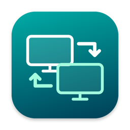

真正的硬件亮度
通过支持的 DDC 通道调整显示器硬件亮度，不使用软件遮罩调暗。

映桥多屏工作不必反复伸手摸显示器按钮。把硬件亮度、分辨率、色彩与输入源集中到一个熟悉的菜单里。
公开版本 1.4.0 · macOS 14+ · Apple Silicon
试一试上面的控件 只在网页中演示
MADE FOR YOUR EVERYDAY
亮度、分辨率与输入源，在菜单栏里轻松掌控。
通过支持的 DDC 通道调整显示器硬件亮度，不使用软件遮罩调暗。
为每块显示器配置实际接口和目标数值，一次切换多块屏幕。
查看分辨率、刷新率与色彩模式，管理颜色配置文件和显示器排列。
GET STARTED
打开菜单栏中的映桥，选择显示器。
读取硬件亮度，按需调整显示参数。
确认实际接线后，配置目标输入源。
不保证。硬件亮度和输入源依赖显示器的 DDC/CI 支持，转接器、扩展坞和连接方式也会影响通信。
目前这个下载入口只提供 macOS 版本。Windows 开发说明已在同一仓库维护，尚无公开安装包。
不是。型号可能使用不同的写入与读回值，请依据物理接口和实测配置，不要套用其他显示器的映射。
READY WHEN YOU ARE
macOS 14+ · Apple Silicon · 公开版本 1.4.0
ALSO IN THE COLLECTION